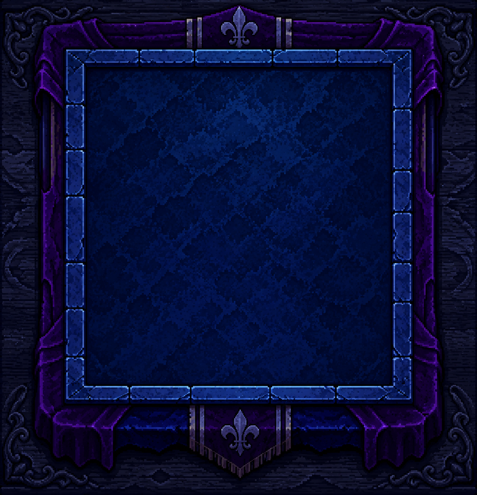

Banhado por uma luz azulada e sepulcral, o espectro de um rei morto governa este salão amaldiçoado, cercado por armaduras possuídas que vigiam cada movimento. Diante do trono, um antigo tabuleiro repousa à sua espera: o monarca exige que você vença seu desafio mortal contra o tempo, ou seus cavaleiros fantasmagóricos ceifarão sua vida sem piedade.

Por trás da moldura ornamentada com símbolos reais esconde-se um labirinto sombrio e traiçoeiro. Cada segundo conta enquanto você busca a saída por caminhos estreitos e confusos, sabendo que qualquer hesitação significa o fim nas mãos da guarda espectral do rei.

Derrotado em seu próprio jogo, o espírito do rei se dissipa nas sombras, deixando o trono finalmente vazio. Sobre a mesa, sua antiga coroa brilha com uma energia espectral, servindo como o passe definitivo para destrancar os portões rumo à próxima fase do castelo.